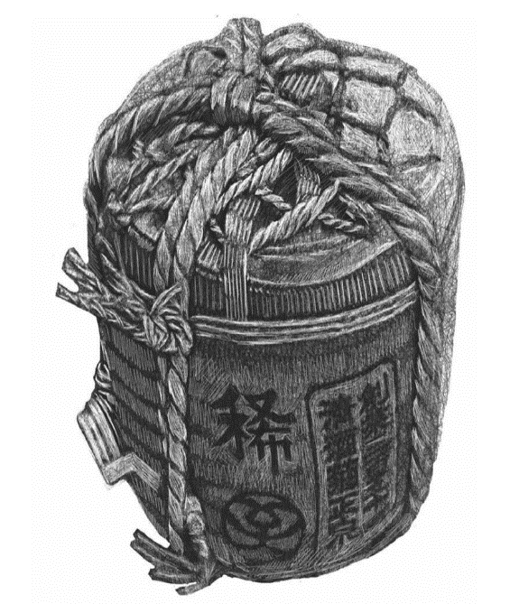

清酒是种米酒，它的原料是大米、酒曲和水。日本人大量种植水稻，稻米的产量满足了日常食用后还有剩余，这就为酿酒提供了可能。日本的清酒出现在庆长时期（1596～1615年），在这之前，日本酿造的是浊酒，这种酒跟中国长江流域的米酒一样，酒体是浑浊的。而清酒的发明，据说是源于一个偶然。
庆长时期，大阪附近有家叫“鸿池酒屋”的酿酒厂，酒厂的一个伙计因为跟老板有矛盾，决心报复，有一天故意把火盆里烧剩下的炉灰倒进了酿酒池里，然后逃之夭夭了。炭是一种物理过滤材料，内部疏松多孔，所以可以吸附较大的微粒，浊酒中的杂质就这么被过滤到了炭灰中，而酒精分子和水分子很小，不会受到影响，最后就留了下来。总之，这个伙计以为黑色的炭灰会毁掉这一池酒，没想到等他主人发现时，炭灰已经吸附了浊酒中的杂质沉在池底，酒池中的液体清亮如水，而且经过过滤后口味更加纯正，日本的清酒就此诞生。
清酒的度数都不高，酒精浓度平均在15%左右。实际上，日本的酒类税法中规定，将22度以下的酒视为清酒，超出者不在清酒之列。清酒本就是米酒，有种淡雅的、甜甜的口感，所以在习惯了四五十度的白酒的中国人看来，喝几瓶根本不算个事儿——这个度数，不就比啤酒高一点儿嘛。实际上，这可是大错特错，如果喝清酒醉了，那可是能醉三四天的。

中国的白酒是蒸馏酒，酒精气化蒸发再冷却成液体，这实际上是一种提纯的过程，所以酒精浓度比较高，而其他物质的浓度很低，白酒的主要成分就是酒精和水。人把白酒喝进肚子里后，肝脏会对酒精进行代谢，把酒精转化成其他物质，加上汗腺、呼吸系统也能排出一部分，所以即便喝醉，等肝脏完成了分解代谢过程，体内就不会再有酒精，醉酒的人也就清醒过来了。不过清酒可不一样。清酒的酿造过程是，酒曲中的酵母菌先把大米中的淀粉分解为糖类，再把糖类转化成酒精。而清酒没有经过蒸馏提纯，因此含有大量的糖，这也就是清酒口感甜的原因。人的血液里有血糖，清酒中的酒精和糖类本来就混在一起，进入人体后这些酒精又通过糖类融进血糖里，因此会长久地留存在人体中。如果肝脏要彻底代谢，所花的时间就比喝白酒时多得多，因此喝清酒醉了，连着几天都会头昏脑涨。
日本人喝酒也跟中国人一样，要“干杯”，这个词在日语里写作“乾杯”。现在在中国，即使说了“干杯”有时也不用真的喝光；而日本人的“乾杯”可不一样，必须要一口喝光。所以日本人会说中国人“干杯了无数次，酒还是那么多”，十分委屈。日本喝酒一般还会选出一个指挥，他会致祝酒词，然后带着大家一起大喊“乾杯”，之后一饮而尽，场面十分热闹。